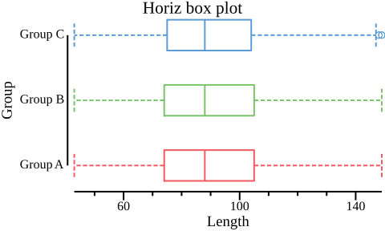

Usage and Examples
Before use
Attention
- The CSV parser requires all the lines have same number of fields/columns. Even lines with spaces will cause error.
- By default, csvtk thinks your files have header row, if not, switch flag
-Hon. - Column names better be unique.
- By default, lines starting with
#will be ignored, if the header row starts with#, please assign flag-Canother rare symbol, e.g.'$'. - By default, csvtk handles CSV files, use flag
-tfor tab-delimited files. - If
"exists in tab-delimited files, use flag-l.
Table of Contents
Information
Format conversion
Set operations
Edit
Ordering
Ploting
csvtk
Usage
A cross-platform, efficient and practical CSV/TSV toolkit
Version: 0.8.0
Author: Wei Shen <shenwei356@gmail.com>
Documents : http://shenwei356.github.io/csvtk
Source code: https://github.com/shenwei356/csvtk
Attention:
1. The CSV parser requires all the lines have same number of fields/columns.
Even lines with spaces will cause error.
2. By default, csvtk thinks your files have header row, if not, switch flag "-H" on.
3. Column names better be unique.
4. By default, lines starting with "#" will be ignored, if the header row
starts with "#", please assign flag "-C" another rare symbol, e.g. '$'.
5. By default, csvtk handles CSV files, use flag "-t" for tab-delimited files.
6. If " exists in tab-delimited files, use flag "-l".
Usage:
csvtk [command]
Available Commands:
csv2md convert CSV to markdown format
csv2tab convert CSV to tabular format
cut select parts of fields
filter filter rows by values of selected fields with artithmetic expression
filter2 filter rows by awk-like artithmetic/string expressions
freq frequencies of selected fields
gather gather columns into key-value pairs
grep grep data by selected fields with patterns/regular expressions
head print first N records
headers print headers
help Help about any command
inter intersection of multiple files
join join multiple CSV files by selected fields
mutate create new column from selected fields by regular expression
plot plot common figures
pretty convert CSV to readable aligned table
rename rename column names
rename2 rename column names by regular expression
replace replace data of selected fields by regular expression
sample sampling by proportion
sort sort by selected fields
space2tab convert space delimited format to CSV
stats summary of CSV file
stats2 summary of selected digital fields
tab2csv convert tabular format to CSV
transpose transpose CSV data
uniq unique data without sorting
version print version information and check for update
Flags:
-c, --chunk-size int chunk size of CSV reader (default 50)
-C, --comment-char string lines starting with commment-character will be ignored. if your header row starts with '#', please assign "-C" another rare symbol, e.g. '$' (default "#")
-d, --delimiter string delimiting character of the input CSV file (default ",")
-l, --lazy-quotes if given, a quote may appear in an unquoted field and a non-doubled quote may appear in a quoted field
-H, --no-header-row specifies that the input CSV file does not have header row
-j, --num-cpus int number of CPUs to use (default value depends on your computer) (default 4)
-D, --out-delimiter string delimiting character of the output CSV file (default ",")
-o, --out-file string out file ("-" for stdout, suffix .gz for gzipped out) (default "-")
-T, --out-tabs specifies that the output is delimited with tabs. Overrides "-D"
-t, --tabs specifies that the input CSV file is delimited with tabs. Overrides "-d" and "-D"
headers
Usage
print headers
Usage:
csvtk headers [flags]
Examples
$ csvtk headers testdata/*.csv$
# testdata/1.csv
1 name
2 attr
# testdata/2.csv
1 name
2 major
# testdata/3.csv
1 id
2 name
3 hobby
stats
Usage
summary of CSV file
Usage:
csvtk stats [flags]
Aliases:
stats, stat
Examples
-
with header row
$ cat testdata/names.csv id,first_name,last_name,username 11,"Rob","Pike",rob 2,Ken,Thompson,ken 4,"Robert","Griesemer","gri" 1,"Robert","Thompson","abc" NA,"Robert","Abel","123" $ cat testdata/names.csv | csvtk stats file num_cols num_rows - 4 5 -
no header row
$ cat testdata/digitals.tsv 4 5 6 1 2 3 7 8 0 8 1,000 4 $ cat testdata/digitals.tsv | csvtk stats -t -H file num_cols num_rows - 3 4
stat2
Usage
summary of selected digital fields: num, sum, min, max, mean, stdev
Usage:
csvtk stats2 [flags]
Flags:
-f, --fields string select only these fields. e.g -f 1,2 or -f columnA,columnB
-F, --fuzzy-fields using fuzzy fields, e.g., -F -f "*name" or -F -f "id123*"
Examples
-
simplest one
$ seq 1 5 | csvtk stats2 -H -f 1 field num sum min max mean stdev 1 5 15 1 5 3 1.58 -
multiple fields
$ cat testdata/digitals.tsv 4 5 6 1 2 3 7 8 0 8 1,000 4 $ cat testdata/digitals.tsv | csvtk stats2 -t -H -f 1-3 field num sum min max mean stdev 1 4 20 1 8 5 3.16 2 4 1,015 2 1,000 253.75 497.51 3 4 13 0 6 3.25 2.5
pretty
Usage
convert CSV to readable aligned table
Attention:
csv2md treats the first row as header line and requires them to be unique
Usage:
csvtk pretty [flags]
Flags:
-r, --align-right align right
-W, --max-width int max width
-w, --min-width int min width
-s, --separator string fields/columns separator (default " ")
Examples:
-
default
$ csvtk pretty testdata/names.csv id first_name last_name username 11 Rob Pike rob 2 Ken Thompson ken 4 Robert Griesemer gri 1 Robert Thompson abc NA Robert Abel 123 -
align right
$ csvtk pretty testdata/names.csv -r id first_name last_name username 11 Rob Pike rob 2 Ken Thompson ken 4 Robert Griesemer gri 1 Robert Thompson abc NA Robert Abel 123 -
custom separator
$ csvtk pretty testdata/names.csv -s " | " id | first_name | last_name | username 11 | Rob | Pike | rob 2 | Ken | Thompson | ken 4 | Robert | Griesemer | gri 1 | Robert | Thompson | abc NA | Robert | Abel | 123
transpose
Usage
transpose CSV data
Usage:
csvtk transpose [flags]
Examples
$ cat testdata/digitals.tsv
4 5 6$
1 2 3$
7 8 0
8 1,000 4
$ csvtk transpose -t testdata/digitals.tsv
4 1 7 8
5 2 8 1,000
6 3 0 4
csv2md
Usage
convert CSV to markdown format
Attention:
csv2md treats the first row as header line and requires them to be unique
Usage:
csvtk csv2md [flags]
Flags:
-a, --alignments string comma separated alignments. e.g. -a l,c,c,c or -a c (default "l")
-w, --min-width int min width (at least 3) (default 3)
Examples
-
give single alignment symbol
$ cat testdata/names.csv | csvtk csv2md -a left id |first_name|last_name|username :--|:---------|:--------|:------- 11 |Rob |Pike |rob 2 |Ken |Thompson |ken 4 |Robert |Griesemer|gri 1 |Robert |Thompson |abc NA |Robert |Abel |12result:
id first_name last_name username 11 Rob Pike rob 2 Ken Thompson ken 4 Robert Griesemer gri 1 Robert Thompson abc NA Robert Abel 12 -
give alignment symbols of all fields
$ cat testdata/names.csv | csvtk csv2md -a c,l,l,l id |first_name|last_name|username :-:|:---------|:--------|:------- 11 |Rob |Pike |rob 2 |Ken |Thompson |ken 4 |Robert |Griesemer|gri 1 |Robert |Thompson |abc NA |Robert |Abel |123result
id first_name last_name username 11 Rob Pike rob 2 Ken Thompson ken 4 Robert Griesemer gri 1 Robert Thompson abc NA Robert Abel 123
head
Usage
print first N records
Usage:
csvtk head [flags]
Flags:
-n, --number int print first N records (default 10)
Examples
-
with header line
$ csvtk head -n 2 testdata/1.csv name,attr foo,cool bar,handsome -
no header line
$ csvtk head -H -n 2 testdata/1.csv name,attr foo,cool
sample
Usage
sampling by proportion
Usage:
csvtk sample [flags]
Flags:
-p, --proportion float sample by proportion
-s, --rand-seed int rand seed (default 11)
Examples
$ seq 100 | csvtk sample -H -p 0.5 | wc -l
46
$ seq 100 | csvtk sample -H -p 0.5 | wc -l
46
$ seq 100 | csvtk sample -H -p 0.1 | wc -l
10
$ seq 100 | csvtk sample -H -p 0.1 | wc -l
10
cut
Usage
select parts of fields
Usage:
csvtk cut [flags]
Flags:
-f, --fields string select only these fields. e.g -f 1,2 or -f columnA,columnB, or -f -columnA for unselect columnA
-F, --fuzzy-fields using fuzzy fields, e.g., -F -f "*name" or -F -f "id123*"
Examples
-
data:
$ cat testdata/names.csv id,first_name,last_name,username 11,"Rob","Pike",rob 2,Ken,Thompson,ken 4,"Robert","Griesemer","gri" 1,"Robert","Thompson","abc" NA,"Robert","Abel","123" -
Select columns by column index:
csvtk cut -f 1,2$ cat testdata/names.csv | csvtk cut -f 1,2 id,first_name 11,Rob 2,Ken 4,Robert 1,Robert NA,Robert -
Select columns by column names:
csvtk cut -f first_name,username$ cat testdata/names.csv | csvtk cut -f first_name,username first_name,username Rob,rob Ken,ken Robert,gri Robert,abc Robert,123 -
Unselect:
-
select 3+ columns:
csvtk cut -f -1,-2$ cat testdata/names.csv | csvtk cut -f -1,-2 last_name,username Pike,rob Thompson,ken Griesemer,gri Thompson,abc Abel,123 -
select columns except
first_name:csvtk cut -f -first_name$ cat testdata/names.csv | csvtk cut -f -first_name id,last_name,username 11,Pike,rob 2,Thompson,ken 4,Griesemer,gri 1,Thompson,abc NA,Abel,123
-
-
Fuzzy fields using wildcard character,
csvtk cut -F -f "*_name,username"$ cat testdata/names.csv | csvtk cut -F -f "*_name,username" first_name,last_name,username Rob,Pike,rob Ken,Thompson,ken Robert,Griesemer,gri Robert,Thompson,abc Robert,Abel,123 -
All fields:
csvtk cut -F -f "*"(only works when all colnames are unique)$ cat testdata/names.csv | csvtk cut -F -f "*" id,first_name,last_name,username 11,Rob,Pike,rob 2,Ken,Thompson,ken 4,Robert,Griesemer,gri 1,Robert,Thompson,abc NA,Robert,Abel,123 -
Field ranges:
-
csvtk cut -f 2-4for column 2,3,4$ cat testdata/names.csv | csvtk cut -f 2-4 first_name,last_name,username Rob,Pike,rob Ken,Thompson,ken Robert,Griesemer,gri Robert,Thompson,abc Robert,Abel,123 -
csvtk cut -f -3--1for discarding column 1,2,3$ cat testdata/names.csv | csvtk cut -f -3--1 username rob ken gri abc 123
-
uniq
Usage
unique data without sorting
Usage:
csvtk uniq [flags]
Flags:
-f, --fields string select only these fields. e.g -f 1,2 or -f columnA,columnB (default "1")
-F, --fuzzy-fields using fuzzy fields, e.g., -F -f "*name" or -F -f "id123*"
-i, --ignore-case ignore case
Examples:
-
data:
$ cat testdata/names.csv id,first_name,last_name,username 11,"Rob","Pike",rob 2,Ken,Thompson,ken 4,"Robert","Griesemer","gri" 1,"Robert","Thompson","abc" NA,"Robert","Abel","123" -
unique first_name (it removes rows with duplicated first_name)
$ cat testdata/names.csv | csvtk uniq -f first_name id,first_name,last_name,username 11,Rob,Pike,rob 2,Ken,Thompson,ken 4,Robert,Griesemer,gri -
unique first_name, a more common way
$ cat testdata/names.csv | csvtk cut -f first_name | csvtk uniq -f 1 first_name Rob Ken Robert
freq
Usage
frequencies of selected fields
Usage:
csvtk freq [flags]
Flags:
-f, --fields string select only these fields. e.g -f 1,2 or -f columnA,columnB (default "1")
-F, --fuzzy-fields using fuzzy fields, e.g., -F -f "*name" or -F -f "id123*"
-i, --ignore-case ignore case
-r, --reverse reverse order while sorting
-n, --sort-by-freq sort by frequency
-k, --sort-by-key sort by key
Examples
-
one filed
$ cat testdata/names.csv | csvtk freq -f first_name | csvtk pretty first_name frequency Ken 1 Rob 1 Robert 3 -
sort by frequency. you can also use
csvtk sortwith more sorting options$ cat testdata/names.csv | csvtk freq -f first_name -n -r | csvtk pretty first_name frequency Robert 3 Ken 1 Rob 1 -
sorty by key
$ cat testdata/names.csv | csvtk freq -f first_name -k | csvtk pretty first_name frequency Ken 1 Rob 1 Robert 3 -
multiple fields
$ cat testdata/names.csv | csvtk freq -f first_name,last_name | csvtk pretty first_name last_name frequency Robert Abel 1 Ken Thompson 1 Rob Pike 1 Robert Thompson 1 Robert Griesemer 1 -
data without header row
$ cat testdata/ testdata/digitals.tsv | csvtk -t -H freq -f 1 8 1 1 1 4 1 7 1
inter
Usage
intersection of multiple files
Usage:
csvtk inter [flags]
Flags:
-f, --fields string select only these fields. e.g -f 1,2 or -f columnA,columnB (default "1")
-F, --fuzzy-fields using fuzzy fields, e.g., -F -f "*name" or -F -f "id123*"
-i, --ignore-case ignore case
Examples:
$ cat testdata/phones.csv
username,phone
gri,11111
rob,12345
ken,22222
shenwei,999999
$ cat testdata/region.csv
name,region
ken,nowhere
gri,somewhere
shenwei,another
Thompson,there
$ csvtk inter testdata/phones.csv testdata/region.csv
username
gri
ken
shenwei
grep
Usage
grep data by selected fields with patterns/regular expressions
Usage:
csvtk grep [flags]
Flags:
-f, --fields string comma separated key fields, column name or index. e.g. -f 1-3 or -f id,id2 or -F -f "group*" (default "1")
-F, --fuzzy-fields using fuzzy fields, e.g., -F -f "*name" or -F -f "id123*"
-i, --ignore-case ignore case
-v, --invert invert match
-n, --no-highlight no highlight
-p, --pattern stringSlice query pattern (multiple values supported)
-P, --pattern-file string pattern files (one pattern per line)
-r, --use-regexp patterns are regular expression
--verbose verbose output
Examples
Matched parts will be highlight
-
By exact keys
$ cat testdata/names.csv | csvtk grep -f last_name -p Pike -p Abel | csvtk pretty id first_name last_name username 11 Rob Pike rob NA Robert Abel 123 -
By regular expression:
csvtk grep -f first_name -r -p Rob$ cat testdata/names.csv | csvtk grep -f first_name -r -p Rob | csvtk pretty id first_name last_name username 11 Rob Pike rob 4 Robert Griesemer gri 1 Robert Thompson abc NA Robert Abel 123 -
By pattern list:
csvtk grep -f first_name -P name_list.txt - Remore rows containing missing data (NA):
csvtk grep -F -f "*" -r -p "^$" -v
filter
Usage
filter rows by values of selected fields with artithmetic expression
Usage:
csvtk filter [flags]
Flags:
--any print record if any of the field satisfy the condition
-f, --filter string filter condition. e.g. -f "age>12" or -f "1,3<=2" or -F -f "c*!=0"
-F, --fuzzy-fields using fuzzy fields, e.g., -F -f "*name" or -F -f "id123*"
Examples
-
single field
$ cat testdata/names.csv id,first_name,last_name,username 11,"Rob","Pike",rob 2,Ken,Thompson,ken 4,"Robert","Griesemer","gri" 1,"Robert","Thompson","abc" NA,"Robert","Abel","123" $ cat testdata/names.csv | csvtk filter -f "id>0" | csvtk pretty id first_name last_name username 11 Rob Pike rob 2 Ken Thompson ken 4 Robert Griesemer gri 1 Robert Thompson abc -
multiple fields
$ cat testdata/digitals.tsv 4 5 6 1 2 3 7 8 0 8 1,000 4 $ cat testdata/digitals.tsv | csvtk -t -H filter -f "1-3>0" 4 5 6 1 2 3 8 1,000 4using
--anyto print record if any of the field satisfy the condition$ cat testdata/digitals.tsv | csvtk -t -H filter -f "1-3>0" --any 4 5 6 1 2 3 7 8 0 8 1,000 4 -
fuzzy fields
$ cat testdata/names.csv | csvtk filter -F -f "i*!=0" id,first_name,last_name,username 11,Rob,Pike,rob 2,Ken,Thompson,ken 4,Robert,Griesemer,gri 1,Robert,Thompson,abc
filter2
Usage
filter rows by awk-like artithmetic/string expressions
The artithmetic/string expression is supported by:
https://github.com/Knetic/govaluate
Supported operators and types:
Modifiers: + - / * & | ^ ** % >> <<
Comparators: > >= < <= == != =~ !~
Logical ops: || &&
Numeric constants, as 64-bit floating point (12345.678)
String constants (single quotes: 'foobar')
Date constants (single quotes)
Boolean constants: true false
Parenthesis to control order of evaluation ( )
Arrays (anything separated by , within parenthesis: (1, 2, 'foo'))
Prefixes: ! - ~
Ternary conditional: ? :
Null coalescence: ??
Usage:
csvtk filter2 [flags]
Flags:
-f, --filter string awk-like filter condition. e.g. '$age>12' or '$1 > $3' or '$name=="abc"' or '$1 % 2 == 0'
Examples:
-
filter rows with
idgreater than 3:$ cat testdata/names.csv id,first_name,last_name,username 11,"Rob","Pike",rob 2,Ken,Thompson,ken 4,"Robert","Griesemer","gri" 1,"Robert","Thompson","abc" NA,"Robert","Abel","123" $ cat testdata/names.csv | csvtk filter2 -f '$id > 3' id,first_name,last_name,username 11,Rob,Pike,rob 4,Robert,Griesemer,gri -
Artithmetic and string expressions
$ cat testdata/names.csv | csvtk filter2 -f '$id > 3 || $username=="ken"' id,first_name,last_name,username 11,Rob,Pike,rob 2,Ken,Thompson,ken 4,Robert,Griesemer,gri -
More artithmetic expressions
$ cat testdata/digitals.tsv 4 5 6 1 2 3 7 8 0 8 1,000 4 $ cat testdata/digitals.tsv | csvtk filter2 -H -t -f '$1 > 2 && $2 % 2 == 0' 7 8 0 8 1,000 4 # comparison between fields and support $ cat testdata/digitals.tsv | csvtk filter2 -H -t -f '$2 <= $3 || ( $1 / $2 > 0.5 )' 4 5 6 1 2 3 7 8 0
join
Usage
join 2nd and later files to the first file by selected fields.
Multiple keys supported, but the orders are ignored.
Usage:
csvtk join [flags]
Flags:
-f, --fields string Semicolon separated key fields of all files, if given one, we think all the files have the same key columns. Fields of different files should be separated by ";", e.g -f "1;2" or -f "A,B;C,D" or -f id (default "1")
--fill string fill content for unmatched data
-F, --fuzzy-fields using fuzzy fields, e.g., -F -f "*name" or -F -f "id123*"
-i, --ignore-case ignore case
-k, --keep-unmatched keep unmatched data of the first file
Examples:
-
data
$ cat testdata/phones.csv username,phone gri,11111 rob,12345 ken,22222 shenwei,999999 $ cat testdata/region.csv name,region ken,nowhere gri,somewhere shenwei,another Thompson,there -
All files have same key column:
csvtk join -f id file1.csv file2.csv$ csvtk join -f 1 testdata/phones.csv testdata/region.csv username,phone,region gri,11111,somewhere ken,22222,nowhere shenwei,999999,another -
keep unmatched
$ csvtk join -f 1 testdata/phones.csv testdata/region.csv --keep-unmatched username,phone,region gri,11111,somewhere rob,12345, ken,22222,nowhere shenwei,999999,another -
keep unmatched and fill with something
$ csvtk join -f 1 testdata/phones.csv testdata/region.csv --keep-unmatched --fill NA username,phone,region gri,11111,somewhere rob,12345,NA ken,22222,nowhere shenwei,999999,another -
Files have different key columns:
csvtk join -f "username;username;name" testdata/names.csv phone.csv adress.csv -k. Note that fields are separated with;not,.$ csvtk join -f "username;name" testdata/phones.csv testdata/region.csv username,phone,region gri,11111,somewhere ken,22222,nowhere shenwei,999999,another -
The 2nd or later files have entries with same ID:
$ cat testdata/1.csv name,attr foo,cool bar,handsome bob,beutiful $ cat testdata/2.csv name,major bar,bioinformatics bob,microbiology bob,computer science $ cat testdata/3.csv id,name,hobby 1,bar,baseball 2,bob,basketball 3,foo,football 4,wei,programming $ csvtk join testdata/1.csv testdata/2.csv | csvtk pretty name attr major bar handsome bioinformatics bob beutiful microbiology bob beutiful computer science $ csvtk join testdata/{1,2,3}.csv -f name -k | csvtk pretty name attr major id hobby foo cool 3 football bar handsome bioinformatics 1 baseball bob beutiful microbiology 2 basketball bob beutiful computer science 2 basketball $ csvtk join testdata/{3,1,2}.csv -f name -k | csvtk pretty id name hobby attr major 1 bar baseball handsome bioinformatics 2 bob basketball beutiful computer science 2 bob basketball beutiful computer science 3 foo football cool 4 wei programming
rename
Usage
rename column names
Usage:
csvtk rename [flags]
Flags:
-f, --fields string select only these fields. e.g -f 1,2 or -f columnA,columnB
-F, --fuzzy-fields using fuzzy fields, e.g., -F -f "*name" or -F -f "id123*"
-n, --names string comma separated new names
Examples:
- Setting new names:
csvtk rename -f A,B -n a,borcsvtk rename -f 1-3 -n a,b,c$ cat testdata/phones.csv username,phone gri,11111 rob,12345 ken,22222 shenwei,999999 $ cat testdata/phones.csv | csvtk rename -f 1 -n 姓名 姓名,phone gri,11111 rob,12345 ken,22222 shenwei,999999
rename2
Usage
rename column names by regular expression
Usage:
csvtk rename2 [flags]
Flags:
Examples:
- replacing with original names by regular express:
cat testdata/c.csv | csvtk rename2 -F -f "*" -p "(.*)" -r 'prefix_$1'for adding prefix to all column names.$ cat testdata/phones.csv username,phone gri,11111 rob,12345 ken,22222 shenwei,999999 $ cat testdata/phones.csv | csvtk rename2 -F -f "*" -p "(.*)" -r 'prefix_${1}_suffix' prefix_username_suffix,prefix_phone_suffix gri,11111 rob,12345 ken,22222 shenwei,999999
replace
Usage
replace data of selected fields by regular expression
Note that the replacement supports capture variables.
e.g. $1 represents the text of the first submatch.
ATTENTION: use SINGLE quote NOT double quotes in *nix OS.
Examples: Adding space to all bases.
csvtk replace -p "(.)" -r '$1 ' -s
Or use the \ escape character.
csvtk replace -p "(.)" -r "\$1 " -s
more on: http://shenwei356.github.io/csvtk/usage/#replace
Special replacement symbols:
{nr} Record number, starting from 1
{kv} Corresponding value of the key (captured variable $n) by key-value file,
n can be specified by flag -I (--key-capt-idx) (default: 1)
Usage:
csvtk replace [flags]
Flags:
-f, --fields string select only these fields. e.g -f 1,2 or -f columnA,columnB (default "1")
-F, --fuzzy-fields using fuzzy fields, e.g., -F -f "*name" or -F -f "id123*"
-i, --ignore-case ignore case
-K, --keep-key keep the key as value when no value found for the key
-I, --key-capt-idx int capture variable index of key (1-based) (default 1)
--key-miss-repl string replacement for key with no corresponding value
-k, --kv-file string tab-delimited key-value file for replacing key with value when using "{kv}" in -r (--replacement)
-p, --pattern string search regular expression
-r, --replacement string replacement. supporting capture variables. e.g. $1 represents the text of the first submatch. ATTENTION: for *nix OS, use SINGLE quote NOT double quotes or use the \ escape character. Record number is also supported by "{nr}".use ${1} instead of $1 when {kv} given!
Examples
- remove Chinese charactors:
csvtk replace -F -f "*_name" -p "\p{Han}+" -r "" - replace by key-value files:
csvtk replace -f 1 -p "(.+)" -r "value of $1 is {kv}" -k kv.tsv$ cat data.tsv name id A ID001 B ID002 C ID004 $ cat alias.tsv 001 Tom 002 Bob 003 Jim $ csvtk replace -t -f 2 -p "ID(.+)" -r "N: {nr}, alias: {kv}" -k alias.tsv data.tsv [INFO] read key-value file: alias.tsv [INFO] 3 pairs of key-value loaded name id A N: 1, alias: Tom B N: 2, alias: Bob C N: 3, alias: 004
mutate
Usage
create new column from selected fields by regular expression
Usage:
csvtk mutate [flags]
Flags:
-f, --fields string select only these fields. e.g -f 1,2 or -f columnA,columnB (default "1")
-i, --ignore-case ignore case
--na for unmatched data, use blank instead of original data
-n, --name string new column name
-p, --pattern string search regular expression with capture bracket. e.g. (default "^(.+)$")
Examples
- In default, copy a column:
csvtk mutate -f id -n newname - extract prefix of data as group name using regular expression (get "A" from "A.1" as group name):
csvtk mutate -f sample -n group -p "^(.+?)\." - get the first letter as new column
$ cat testdata/phones.csv username,phone gri,11111 rob,12345 ken,22222 shenwei,999999 $ cat testdata/phones.csv | csvtk mutate -f username -p "^(\w)" -n first_letter username,phone,first_letter gri,11111,g rob,12345,r ken,22222,k shenwei,999999,s
gather
Usage
gather columns into key-value pairs
Usage:
csvtk gather [flags]
Flags:
-f, --fields string fields for gathering. e.g -f 1,2 or -f columnA,columnB, or -f -columnA for unselect columnA
-F, --fuzzy-fields using fuzzy fields, e.g., -F -f "*name" or -F -f "id123*"
-k, --key string name of key column to create in output
-v, --value string name of key column to create in output
Examples:
$ cat testdata/names.csv
id,first_name,last_name,username
11,"Rob","Pike",rob
2,Ken,Thompson,ken
4,"Robert","Griesemer","gri"
1,"Robert","Thompson","abc"
NA,"Robert","Abel","123
$ cat testdata/names.csv | csvtk gather -k item -v value -f -1
id,item,value
11,first_name,Rob
11,last_name,Pike
11,username,rob
2,first_name,Ken
2,last_name,Thompson
2,username,ken
4,first_name,Robert
4,last_name,Griesemer
4,username,gri
1,first_name,Robert
1,last_name,Thompson
1,username,abc
NA,first_name,Robert
NA,last_name,Abel
NA,username,123
sort
Usage
sort by selected fields
Usage:
csvtk sort [flags]
Flags:
-k, --keys value keys. sort type supported, "n" for number and "r" for reverse. e.g. "-k 1" or "-k A:r" or ""-k 1:nr -k 2" (default [1])
Examples
-
data
$ cat testdata/names.csv id,first_name,last_name,username 11,"Rob","Pike",rob 2,Ken,Thompson,ken 4,"Robert","Griesemer","gri" 1,"Robert","Thompson","abc" NA,"Robert","Abel","123" -
By single column :
csvtk sort -k 1orcsvtk sort -k last_name-
in alphabetical order
$ cat testdata/names.csv | csvtk sort -k first_name id,first_name,last_name,username 2,Ken,Thompson,ken 11,Rob,Pike,rob NA,Robert,Abel,123 1,Robert,Thompson,abc 4,Robert,Griesemer,gri -
in reversed alphabetical order
$ cat testdata/names.csv | csvtk sort -k first_name:r id,first_name,last_name,username NA,Robert,Abel,123 1,Robert,Thompson,abc 4,Robert,Griesemer,gri 11,Rob,Pike,rob 2,Ken,Thompson,ken -
in numerical order
$ cat testdata/names.csv | csvtk sort -k id:n id,first_name,last_name,username NA,Robert,Abel,123 1,Robert,Thompson,abc 2,Ken,Thompson,ken 4,Robert,Griesemer,gri 11,Rob,Pike,rob
-
-
By multiple columns:
csvtk sort -k 1,2orcsvtk sort -k 1 -k 2orcsvtk sort -k last_name,age# by first_name and then last_name $ cat testdata/names.csv | csvtk sort -k first_name -k last_name id,first_name,last_name,username 2,Ken,Thompson,ken 11,Rob,Pike,rob NA,Robert,Abel,123 4,Robert,Griesemer,gri 1,Robert,Thompson,abc # by first_name and then ID $ cat testdata/names.csv | csvtk sort -k first_name -k id:n id,first_name,last_name,username 2,Ken,Thompson,ken 11,Rob,Pike,rob NA,Robert,Abel,123 1,Robert,Thompson,abc 4,Robert,Griesemer,gri -
By user-defined order
# user-defined order/level $ cat testdata/size_level.txt tiny mini small medium big # original data $ cat testdata/size.csv id,size 1,Huge 2,Tiny 3,Big 4,Small 5,Medium $ csvtk sort -k 2:u -i -L 2:testdata/size_level.txt testdata/size.csv id,size 2,Tiny 4,Small 5,Medium 3,Big 1,Huge
plot
Usage
plot common figures
Notes:
1. Output file can be set by flag -o/--out-file.
2. File format is determined by the out file suffix.
Supported formats: eps, jpg|jpeg, pdf, png, svg, and tif|tiff
3. If flag -o/--out-file not set (default), image is written to stdout,
you can display the image by pipping to "display" command of Imagemagic
or just redirect to file.
Usage:
csvtk plot [command]
Available Commands:
box plot boxplot
hist plot histogram
line line plot and scatter plot
Flags:
--axis-width float axis width (default 1.5)
-f, --data-field string column index or column name of data (default "1")
--format string image format for stdout when flag -o/--out-file not given. available values: eps, jpg|jpeg, pdf, png, svg, and tif|tiff. (default "png")
-g, --group-field string column index or column name of group
--height float Figure height (default 4.5)
--label-size int label font size (default 14)
--tick-width float axis tick width (default 1.5)
--title string Figure title
--title-size int title font size (default 16)
--width float Figure width (default 6)
--x-max string maximum value of X axis
--x-min string minimum value of X axis
--xlab string x label text
--y-max string maximum value of Y axis
--y-min string minimum value of Y axis
--ylab string y label text
Note that most of the flags of plot are global flags of the subcommands
hist, box and line
Notes of image output
- Output file can be set by flag -o/--out-file.
- File format is determined by the out file suffix. Supported formats: eps, jpg|jpeg, pdf, png, svg, and tif|tiff
- If flag -o/--out-file not set (default), image is written to stdout, you can display the image by pipping to "display" command of Imagemagic or just redirect to file.
plot hist
Usage
plot histogram
Notes:
1. Output file can be set by flag -o/--out-file.
2. File format is determined by the out file suffix.
Supported formats: eps, jpg|jpeg, pdf, png, svg, and tif|tiff
3. If flag -o/--out-file not set (default), image is written to stdout,
you can display the image by pipping to "display" command of Imagemagic
or just redirect to file.
Usage:
csvtk plot hist [flags]
Flags:
--bins int number of bins (default 50)
--color-index int color index, 1-7 (default 1)
Examples
-
example data
$ zcat testdata/grouped_data.tsv.gz | head -n 5 | csvtk -t pretty Group Length GC Content Group A 97 57.73 Group A 95 49.47 Group A 97 49.48 Group A 100 51.00 -
plot histogram with data of the second column:
csvtk -t plot hist testdata/grouped_data.tsv.gz -f 2 --title Histogram -o histogram.png
-
You can also write image to stdout and pipe to "display" command of Imagemagic:
csvtk -t plot hist testdata/grouped_data.tsv.gz -f 2 | display
plot box
Usage
plot boxplot
Notes:
1. Output file can be set by flag -o/--out-file.
2. File format is determined by the out file suffix.
Supported formats: eps, jpg|jpeg, pdf, png, svg, and tif|tiff
3. If flag -o/--out-file not set (default), image is written to stdout,
you can display the image by pipping to "display" command of Imagemagic
or just redirect to file.
Usage:
csvtk plot box [flags]
Flags:
--box-width float box width
--horiz horize box plot
Examples
-
plot boxplot with data of the "GC Content" (third) column, group information is the "Group" column.
csvtk -t plot box testdata/grouped_data.tsv.gz -g "Group" -f "GC Content" --width 3 --title "Box plot > boxplot.png"
-
plot horiz boxplot with data of the "Length" (second) column, group information is the "Group" column.
csvtk -t plot box testdata/grouped_data.tsv.gz -g "Group" -f "Length" --height 3 --width 5 --horiz --title "Horiz box plot > boxplot2.png"
plot line
Usage
line plot and scatter plot
Notes:
1. Output file can be set by flag -o/--out-file.
2. File format is determined by the out file suffix.
Supported formats: eps, jpg|jpeg, pdf, png, svg, and tif|tiff
3. If flag -o/--out-file not set (default), image is written to stdout,
you can display the image by pipping to "display" command of Imagemagic
or just redirect to file.
Usage:
csvtk plot line [flags]
Flags:
-x, --data-field-x string column index or column name of X for command line
-y, --data-field-y string column index or column name of Y for command line
--legend-left locate legend along the left edge of the plot
--legend-top locate legend along the top edge of the plot
--line-width float line width (default 1.5)
--point-size float point size (default 3)
--scatter only plot points
Examples
-
example data
$ head -n 5 testdata/xy.tsv Group X Y A 0 1 A 1 1.3 A 1.5 1.5 A 2.0 2 -
plot line plot with X-Y data
csvtk -t plot line testdata/xy.tsv -x X -y Y -g Group --title "Line plot" > lineplot.png
-
plot scatter
csvtk -t plot line testdata/xy.tsv -x X -y Y -g Group --title "Scatter" --scatter > lineplot.png